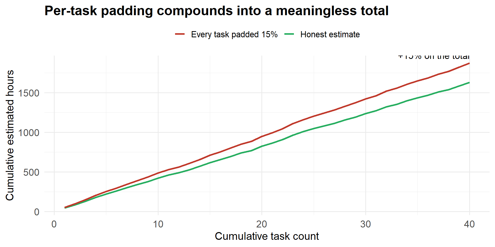

List the common sources of project cost and classify any cost against the four cost dichotomies (direct/indirect, fixed/variable, normal/expedited, recurring/non-recurring).
Calculate direct labour cost from a rate and hours, and apply an indirect-cost percentage.
Select an estimating method (ballpark, parametric, feasibility, definitive) appropriate to the project stage, and state its expected accuracy.
Explain how planning horizon, duration, people, structure, padding, and organizational culture affect estimate quality.
Compare top-down and bottom-up budgeting and build a bottom-up budget from a work breakdown structure using activity-based costing.
Construct a time-phased budget and plot the cumulative cost baseline (the S-curve).
Size a contingency reserve and distinguish it from a management reserve.
Before we begin: you have been asked for “a number” before you have any details
A stakeholder corners you: “Ballpark it — what will this project cost?” You have a one-page concept and nothing else. What do you say, and how do you say it so the number does not follow you around for the next six months as a commitment? Hold that thought.
9.2 Introduction: the number that decides whether the project happens
Back to the running project. Your company must present a budget to Senior Management before the Scope and Charter are approved. The project brief hands you rough ranges to work from:
Selected budget ranges from the RC-vehicle project brief
Item
Range
Project Manager (salary)
$60 000 – $80 000
Team members (salary, each)
$30 000 – $45 000
Sundry / overhead (per hour)
$8.00 – $15.00
Motor / controller
$100 000 – $175 000
Carbon fibre
$120 000 – $200 000
Aluminium
$50 000 – $115 000
Tooling
$100 000 – $180 000
Testing
$25 000 – $100 000
Government approval (CSA, CE, MTO)
$2 000 – $10 000
Packaging / shipping
$5 000 – $25 000
Cost estimation is the first step in building a budget, and the budget determines whether the project is feasible at all. Two principles run through everything below:
The more clearly you define each cost element up front, the fewer budgeting errors you make.
The more accurate your initial estimate, the more your budget reflects reality — and the less likely a painful overrun later.
Note
Industry snapshot. A defense contractor bidding a firm-fixed-price contract must submit a definitive estimate (±5 %): if the real cost comes in higher, the contractor eats the difference. A food company scoping a new retort line at the concept stage lives with a ballpark (±30 %) and revises as quotes arrive. Same tools, very different tolerance for error — driven by where in the project you are standing.
9.3 Where project cost comes from
Cost management starts in the planning phase, when you identify the project’s human and material resources and lay out a time-phased budget that reflects when each will be used. The common sources of cost:
Labour — the project team and anyone charging time to the project.
Materials — everything consumed to build the deliverable.
Subcontractors — external vendors, and internal support departments (test lab, drafting) that cross-charge.
Equipment and facilities — purchased, leased, or allocated.
Travel.
Shipping — inbound and outbound, normal and expedited.
9.4 The eight cost types
Every cost gets sorted into one or more of eight categories, arranged as four either/or pairs. A single cost usually carries two or three labels at once.
cost_types <-data.frame(Dichotomy =c("Direct vs. Indirect", "", "Fixed vs. Variable", "","Normal vs. Expedited", "", "Recurring vs. Non-recurring", ""),Type =c("Direct", "Indirect", "Fixed", "Variable","Normal", "Expedited", "Recurring", "Non-recurring"),Meaning =c("Clearly generated by the project (project labour, project materials, POs).","Overhead: rent, property tax, benefits, utilities, depreciation, admin. Often applied as 20--50 % of direct cost.","Does not change with usage (a 6-month equipment lease at a flat fee).","Proportional to usage (machine-hour charges, fuel, mileage).","Incurred during normal operation and working hours; includes overtime that was already scheduled.","Unplanned cost to go faster: rush freight, extra hires, premium to a supplier for priority.","Happens again through the project life: utilities, logistics, ongoing labour, monthly maintenance.","One-time, usually at the start or end: training, prototype tooling, initial market analysis." ))knitr::kable(cost_types, align =c("l", "l", "l"),caption ="The four cost dichotomies (eight types).") |> kableExtra::kable_styling(bootstrap_options =c("striped", "hover", "condensed"),full_width =FALSE) |> kableExtra::column_spec(2, bold =TRUE)
Table 9.1: The four cost dichotomies (eight types).
Dichotomy
Type
Meaning
Direct vs. Indirect
Direct
Clearly generated by the project (project labour, project materials, POs).
Indirect
Overhead: rent, property tax, benefits, utilities, depreciation, admin. Often applied as 20--50 % of direct cost.
Fixed vs. Variable
Fixed
Does not change with usage (a 6-month equipment lease at a flat fee).
Variable
Proportional to usage (machine-hour charges, fuel, mileage).
Normal vs. Expedited
Normal
Incurred during normal operation and working hours; includes overtime that was already scheduled.
Expedited
Unplanned cost to go faster: rush freight, extra hires, premium to a supplier for priority.
Recurring vs. Non-recurring
Recurring
Happens again through the project life: utilities, logistics, ongoing labour, monthly maintenance.
Non-recurring
One-time, usually at the start or end: training, prototype tooling, initial market analysis.
9.4.1 Direct labour cost
The core calculation is simple:
\[\text{Total Direct Labour Cost} = \text{Direct Labour Rate} \times \text{Hours Spent}\]
Indirect cost is harder to pin to a task, so many organizations apply it as a percentage of direct cost:
9.4.2 Worked Example 1: fully-burdened cost of a work package
The “Design body & frame” work package needs 1 mechanical designer for 220 h at $46/h and 1 junior engineer for 120 h at $32/h. Direct materials for prototypes are $4 500. The company applies indirect cost at 35 % of direct cost.
Direct labour : $13 960
Direct materials: $4 500
Direct cost : $18 460
Indirect (35%) : $6 461
-----
Fully-burdened work-package cost: $24 921
Practice: classify the cost (from the MGMT-3105 budgeting case study)
For each item, give up to three labels from: A Direct, B Indirect, C Fixed, D Variable, E Recurring, F Non-recurring, G Normal, H Expedited.
#
Cost item
Answer
1
Technician’s hourly wages for project assembly
A Direct, D Variable, G Normal
2
Office rent for company headquarters
B Indirect, C Fixed, E Recurring
3
One-time purchase of specialized testing software
A Direct, F Non-recurring
4
Electricity used by production equipment
D Variable, E Recurring, B Indirect
6
Hiring extra workers to meet a tight deadline
H Expedited, A Direct
9
Rush shipment of components to meet schedule
H Expedited, A Direct
12
Cost of the project manager’s salary
C Fixed, E Recurring, A Direct
17
Routine monthly maintenance of equipment
F … (trick: this is E Recurring, B Indirect)
23
Equipment lease for six months (flat fee)
B Indirect, C Fixed, E Recurring
40
One-time cost for prototype tooling
A Direct, F Non-recurring, C Fixed
The pattern: anything charged straight to the project is Direct; overhead is Indirect; anything you pay to go faster is Expedited; anything paid once is Non-recurring. Most items are genuinely two or three of these at once.
9.4.3 The dichotomies on the running project
Fixed vs. variable. The 6-month lease on the CMM is fixed — the fee is the same whether you measure 50 parts or 5 000. The machine-hour charge on the rented moulding press is variable. Leasing an expensive machine is a real PM judgement call: will the usage justify the flat fee?
Normal vs. expedited. Air-freighting circuit boards from the supplier to recover a slipped date is expedited and direct. The overtime you planned into the schedule from day one is still normal.
Recurring vs. non-recurring. Prototype tooling and the initial market analysis are non-recurring. Utilities, logistics, and the team’s salaries are recurring — and it matters which is which the moment you build a time-phased budget.
9.5 Estimating methods and their accuracy
The method you can use depends on how much you know, which depends on how far into the project you are.
methods <-data.frame(Method =c("Ballpark / order-of-magnitude", "Comparative / parametric","Feasibility", "Definitive"),`When`=c("Very early; scarce time/resources; deciding whether to even bid.","A genuinely similar past project exists, with reliable archived actuals.","Scope is clear and first supplier quotes are back (common in construction).","Most design is complete; major POs can be written; detail is known." ),Accuracy =c("+/- 30 %", "+/- 15 %", "+/- 10 %", "+/- 5 %"),check.names =FALSE)knitr::kable(methods, align =c("l", "l", "c"),caption ="Estimating methods by project stage and typical accuracy.") |> kableExtra::kable_styling(bootstrap_options =c("striped", "hover", "condensed"),full_width =FALSE) |> kableExtra::column_spec(3, bold =TRUE)
Table 9.2: Estimating methods by project stage and typical accuracy.
Method
When
Accuracy
Ballpark / order-of-magnitude
Very early; scarce time/resources; deciding whether to even bid.
+/- 30 %
Comparative / parametric
A genuinely similar past project exists, with reliable archived actuals.
+/- 15 %
Feasibility
Scope is clear and first supplier quotes are back (common in construction).
+/- 10 %
Definitive
Most design is complete; major POs can be written; detail is known.
+/- 5 %
This is the cone of uncertainty: the possible range around an estimate is widest at the concept stage and narrows as the project is defined.
Figure 9.1: The cone of uncertainty. Early estimates can be off by +/- 30 %; the range narrows to +/- 5 % only once most design decisions are locked. The same $1.0M point estimate means very different things at each stage.
9.5.1 Try it yourself: parametric estimate and the accuracy band
A parametric estimate uses a cost-estimating relationship (CER) from history — for example, “past RC-vehicle projects cost about $14.50 per assembled part plus $85 000 of fixed project cost.” The live cell builds the estimate and shows the band each method would put around it.
Why quote a range at all — why not just give “the number”?
Because a single number reads as a commitment. If you say “$1.8M” at the concept stage and the definitive estimate later lands at $2.0M, you have “overrun by $200k” — even though $2.0M was always inside the ±30 % ballpark band. Quoting “$1.3M–$2.3M, ballpark” sets the expectation honestly and buys you room to refine. A clear distinction between an estimate and a commitment is one of the most important things a PM can establish early.
9.6 What makes estimates good or bad
Factor
Effect on estimate quality
Planning horizon
Estimates of near-term work are close to 100 % accurate; accuracy falls the further out the task sits.
Project duration
Long projects and new technology add uncertainty, especially if the scope statement is weak.
People
The closer the estimator’s experience matches the work, the better. Teams that have worked together before form faster. Staff turnover hurts.
Structure
Dedicated teams deliver faster but tie up people full-time. Matrix organizations are more cost-efficient but slower.
Padding
Estimators add a safety margin. If everyone pads a little, the project total is badly overstated and stops reflecting reality.
Organizational culture
Some cultures reward padding; others prize accuracy. The consequences an estimator faces for a miss shape the number they give.
Other
Equipment downtime, sickness, vacation, holidays, legal limits, and project priority all leak into the estimate.
9.6.1 The cost of padding
Padding feels prudent per task. Watch what it does across a whole project.
set.seed(2025)n_tasks <-40true_mean <-40# hours, honest most-likely per task# Honest estimates vary around the truth; padded estimates add 15% on top.honest <-rnorm(n_tasks, true_mean, 6)padded <- honest *1.15df <-data.frame(task =1:n_tasks,honest_cum =cumsum(honest),padded_cum =cumsum(padded))ggplot(df, aes(x = task)) +geom_line(aes(y = honest_cum, color ="Honest estimate"), linewidth =1.1) +geom_line(aes(y = padded_cum, color ="Every task padded 15%"), linewidth =1.1) +annotate("text", x = n_tasks, y = df$padded_cum[n_tasks],label =paste0("+", round(100* (df$padded_cum[n_tasks] / df$honest_cum[n_tasks] -1)), "% on the total"),hjust =1, vjust =-0.6, size =3.4* diagram_text_scale) +scale_color_manual(values =c("Honest estimate"="#27AE60","Every task padded 15%"="#C0392B")) +labs(title ="Per-task padding compounds into a meaningless total",x ="Cumulative task count", y ="Cumulative estimated hours",color =NULL) +theme_minimal() +theme(legend.position ="top",plot.title =element_text(size =14* diagram_text_scale, face ="bold"),axis.title =element_text(size =11* diagram_text_scale),axis.text =element_text(size =10* diagram_text_scale) )

Figure 9.2: A 15 % ‘just to be safe’ pad added to every one of 40 tasks does not add 15 % to the project — it adds 15 % to the mean, but the padded total sits far above any realistic outcome because the pads do not all get used.
The fix is not “ban all safety margin” — it is to remove padding from the work packages and hold a single, visible contingency reserve at the project level (covered below).
9.6.2 Guidelines for estimating (cost and time)
Responsibility: the person who will do the task makes the estimate (except for highly specialised work). It uses their experience and builds their buy-in.
Use several estimators: independent estimates from knowledgeable people, reconciled, remove the extremes.
Assume normal conditions: normal hours, normal resource levels — and write the assumptions down.
Define the time units and the estimating base.
Estimate each task independently; be careful with chains of dependent tasks, and keep one estimator per task.
Keep contingencies out of the work packages. Contingency is a separate, managed fund.
9.7 Budgeting: top-down and bottom-up
The budget and the schedule are built in tandem — the budget decides whether the schedule’s milestones are reachable.
approaches <-data.frame(Aspect =c("How it starts", "Advantages", "Disadvantages"),`Top-down`=c("Senior management sets the overall budget and major work-package figures from experience; the numbers are pushed down the hierarchy and refined.","Management aggregate estimates are often quite accurate; imposes budget discipline and cost control.","Creates friction: lower levels must fit management's fixed total. Turns into a zero-sum game between functions." ),`Bottom-up`=c("Start from the WBS; apply direct and indirect cost to each activity; sum up to work package, deliverable, then project.","Forces detailed planning; improves PM--functional-manager communication; gives management a clear basis for prioritizing scarce resources.","Reduces management's control to oversight rather than initiation; can misalign project goals with company goals; fine-tuning is time-consuming." ),check.names =FALSE)knitr::kable(approaches, align =c("l", "l", "l"),caption ="Top-down vs. bottom-up budgeting.") |> kableExtra::kable_styling(bootstrap_options =c("striped", "hover", "condensed"),full_width =FALSE) |> kableExtra::column_spec(1, bold =TRUE)
Table 9.3: Top-down vs. bottom-up budgeting.
Aspect
Top-down
Bottom-up
How it starts
Senior management sets the overall budget and major work-package figures from experience; the numbers are pushed down the hierarchy and refined.
Start from the WBS; apply direct and indirect cost to each activity; sum up to work package, deliverable, then project.
Advantages
Management aggregate estimates are often quite accurate; imposes budget discipline and cost control.
Forces detailed planning; improves PM--functional-manager communication; gives management a clear basis for prioritizing scarce resources.
Disadvantages
Creates friction: lower levels must fit management's fixed total. Turns into a zero-sum game between functions.
Reduces management's control to oversight rather than initiation; can misalign project goals with company goals; fine-tuning is time-consuming.
9.8 Activity-based costing (ABC)
ABC treats a project as a series of activities, each of which consumes resources. Cost the activities and you have costed the project. Four steps:
Identify the activities that consume resources and assign costs to them.
Identify the cost drivers for each activity (personnel, materials, machine time…).
Compute a cost rate per driver unit (e.g. labour $/hour).
Assign cost = rate × units the project uses. (Example: an engineer at $60/h working 80 h = $4 800.)
9.8.1 A preliminary ABC budget
Splitting each activity into its direct and overhead components:
Table 9.4: Preliminary ABC budget: direct vs. overhead by activity.
Activity
Direct
Overhead
Total
Survey
3 500
500
4 000
Design
7 000
1 000
8 000
Clear site
3 500
500
4 000
Foundation
6 750
750
7 500
Framing
8 000
2 000
10 000
Plumb & wire
3 750
1 250
5 000
TOTAL
32 500
6 000
38 500
9.8.2 Try it yourself: cost an activity, then a variance
The live cell costs a single activity from its drivers, then compares planned vs. actual to get the variance. Change the rates, hours, or actuals.
Warning
Common mistake. Contingency is not built into an ABC budget. ABC costs the activities as they are planned to run; the contingency reserve is added afterward, on top of the total.
9.9 The time-phased budget and the S-curve
A time-phased budget spreads each activity’s cost across the calendar periods when it will actually be spent. Summing down the columns gives monthly planned spend; the running total is the cumulative cost baseline — the S-curve you will track the project against in Chapter 12.
Figure 9.3: Time-phased budget for a six-activity project. Bars are planned spend per month; the line is the cumulative baseline (the S-curve). Spend is slow at first, steepest mid-project, and tapers at the end.
Matching the cost baseline to the schedule baseline is what lets you set milestones for both schedule and budget and later tell whether a project that has spent 60 % of its money is 60 %, 40 %, or 80 % done.
9.10 Contingency reserves
A budget contingency is extra money set aside to cover the uncertainty that every estimate carries — because even the best budget is only an estimate and something unforeseen always happens. Key points:
Added after all costs are identified, as a cushion on top of the calculated total (commonly 10–15 %; the MGMT-3105 Costs Chart uses 15 %).
Not included in an ABC budget — it sits on top.
The PM controls a project contingency fund; separately, top management holds a management reserve for genuinely unknown-unknown events.
Why stakeholders push back: the percentage can look arbitrary, or feel like being asked to pay for the vendor’s poor cost control. Decide early — and write into the scope statement — whether contingency applies across all tasks or is held for the tasks critical to project success.
reserves <-data.frame(Feature =c("Covers", "Owned by", "Part of the cost baseline?", "Typical size"),`Contingency reserve`=c("Identified risks / \"known-unknowns\" (small scope adjustments, iteration, Murphy's Law).","Project manager.","Yes --- inside the baseline.","10--15 % of estimated cost (project-dependent)." ),`Management reserve`=c("Unidentified risks / \"unknown-unknowns.\"","Senior management / sponsor.","No --- outside the baseline; released by management.","Set by organizational policy." ),check.names =FALSE)knitr::kable(reserves, align =c("l", "l", "l"),caption ="Contingency reserve vs. management reserve.") |> kableExtra::kable_styling(bootstrap_options =c("striped", "hover", "condensed"),full_width =FALSE) |> kableExtra::column_spec(1, bold =TRUE)
Table 9.5: Contingency reserve vs. management reserve.
No --- outside the baseline; released by management.
Typical size
10--15 % of estimated cost (project-dependent).
Set by organizational policy.
9.10.1 Try it yourself: build the RC-vehicle project budget
The live cell builds a rough bottom-up budget from the project brief’s ranges (using a pick inside each range), rolls up labour and materials, and adds a contingency. Change the picks or the contingency rate and watch the total — then check it against what Senior Management is likely to approve.
How would top-down vs. bottom-up change this number?
The cell above is bottom-up: it sums the pieces and lets the total fall out. A top-down pass would start with a figure Senior Management is willing to fund — say “$650k, no more” — and force each line to fit. In practice you do both: build bottom-up for defensibility, compare to the top-down ceiling, and negotiate the gap before the Charter is signed. If bottom-up comes in well over the ceiling, that is a feasibility finding, not a rounding problem.
Every cost carries two or three of the eight labels: direct/indirect, fixed/variable, normal/expedited, recurring/non-recurring. Direct labour cost = rate × hours; indirect is often 20–50 % of direct.
Estimating method follows project stage: ballpark ±30 %, parametric ±15 %, feasibility ±10 %, definitive ±5 % — the cone of uncertainty. Always quote a range, and keep “estimate” separate from “commitment.”
Estimate quality is driven by planning horizon, duration, people, structure, culture, and padding — which compounds into a meaningless total. Remove pads from work packages; hold one visible contingency.
Top-down imposes discipline but breeds friction; bottom-up (via activity-based costing on the WBS) forces real planning. ABC = identify activities → cost drivers → rate per unit → rate × units.
A time-phased budget produces the cumulative cost baseline (S-curve) you track against later.
Contingency reserve (10–15 %, PM-owned, inside the baseline, covers known-unknowns) is distinct from the management reserve (sponsor-owned, outside the baseline, covers unknown-unknowns). Contingency is added after ABC, never inside it.
9.12 Practice Problems
Problem 1: Fully-burdened labour and an indirect-rate swing
A test campaign needs 2 technicians for 3 weeks (37.5 h/week each) at $34/h, plus $6 200 of consumables. Compute the fully-burdened cost at an indirect rate of 25 %, and again at 45 %. How much does the indirect-rate assumption alone move the number?
Indirect 25%: direct $13 850 + indirect $3 462 = $17 312
Indirect 45%: direct $13 850 + indirect $6 232 = $20 082
Swing from the indirect-rate assumption alone: $2 770
The direct cost is fixed at $21 500, but the burdened total moves by $4 300 — 20 % of direct — purely on the overhead assumption. Always state the indirect rate you used.
Problem 2: Which estimating method, and what range?
For each situation, name the method and give the ± band around a $500 000 point estimate.
A retailer asks, in a hallway, roughly what a new product line will cost. You have a concept sketch.
You have run three near-identical RC-vehicle launches in the last four years with clean cost records.
All major POs are drafted and 90 % of the design is released for a firm-fixed-price defense bid.
Definitive, ±5 % → $475 000 – $525 000. (Anything looser is a bad idea on a fixed-price bid.)
Problem 3: Variance analysis on the ABC budget
Using the preliminary ABC budget above (total planned $63 250), the project finishes with these actuals: Survey $4 250, Design $8 000, Clear site $3 500, Foundation $8 500, Framing $11 250, Plumb & wire $5 150. Find the variance per activity and overall, and flag the activities that need a post-mortem.
Activity Planned Actual Variance Pct
Survey 4000 4250 -250 -6.2
Design 8000 8000 0 0.0
Clear site 4000 3500 500 12.5
Foundation 7500 8500 -1000 -13.3
Framing 10000 11250 -1250 -12.5
Plumb & wire 5000 5150 -150 -3.0
TOTAL planned $38 500 actual $40 650 variance $-2 150 (-5.6%)
Design and (roughly) Survey held. Foundation (-13 %) and Framing (-13 %) blew through and drove the whole project $2 150 (3.4 %) over — those two get the post-mortem.
Problem 4 (discussion): sizing contingency for the RC-vehicle project
The project brief flags several live risks: one candidate motor supplier is unproven, that supplier’s staff are negotiating a first labour contract, the carbon-fibre supplier is mid-restructuring after an acquisition, and a new assembly line would carry a learning curve. The subtotal budget is $620 000.
Would you size the contingency at 10 %, 15 %, or 20 %? Would you spread it across all tasks or ring-fence it for specific ones? Defend your answer.
Discussion points. With that many concentrated, plausible risks, 10 % is light; 15 % is defensible and matches the course’s Costs Chart; 20 % is arguable if the unproven-supplier and new-line risks are both realised. A strong answer ring-fences most of the reserve against the supplier and assembly-line line items (the tasks critical to success) rather than smearing it evenly, and states that split in the scope statement so stakeholders are not surprised when it is drawn down.